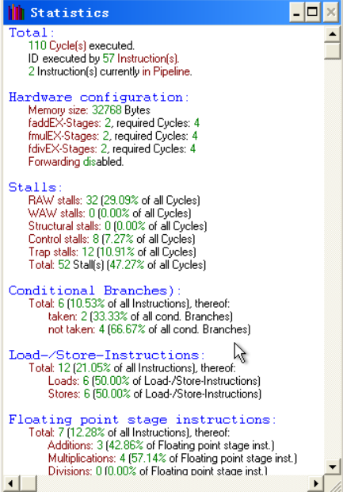
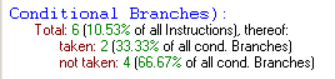

指令流水线相关性分析
实验目的
通过使用 WINDLX 模拟器，对程序中的三种相关原理进行观察，并对使用专用通路，增加运算部件等技术对性能的影响进行考察，加深对流水线和 RISC 处理器的特点的理解。
实验原理
指令流水线中主要有结构相关、数据相关、控制相关。相关影响流水线性能。
数据相关
由于相邻的两条或多条指令使用了相同的数据地址而发生的关联。
结构相关
结构相关是指因为程序的执行方向可能被改变而引起的相关。可能改变程序执行方向的指令通常有无条件转移、一般条件转移、复合条件转移、子程序调用、中断等。
控制相关
控制相关是指由转移指令引发的相关。
实验步骤
实验准备
将浮点运算的延时设为 4 个周期

选择 File→Load Code or Data，将 input.s 文件和 fact.s 文件按下图顺序装入主存

使用 WinDLX 模拟器，对 Fact.s 做如下分析：
观察程序中出现的数据 / 控制 / 结构相关，指出程序中出现上述现象的指令组合
数据相关及其组合
5 个周期里，Clock Cycle Diagram 窗口的时空图和 Pipeline 窗口中的流图第一次出现了橘黄色的 R-Stall

点击 seqi r5,r3,0xa，出现的具体信息如下图

lbu r3,0x0(r2) 要在 WB 周期内写回 R3 的数据，而下一条指令 seqi r5,r3,0xa 要在 intEX 周期内读取 r3 的数据，发生了写后读 RAW，所以为了避免冲突，seqi r5,r3,0xa 的 intEX 指令延迟了一个周期进行。
指令组合为
1 | lbu r3,0x0(r2) |
控制相关及其组合
在第 4 个时钟周期，第一条命令处于 MEM 段，第二条命令处于 intEX 段，第四条命令处于 IF 段，而第三条命令显示为 aborted。

发生 aborted 的原因为，jal InputUnsigned 是无条件分支指令，但只有在第三个时钟周期，jal 指令被译码后才知道。这时，下一条指令 movei2fp 已经取出，但需执行的下一条指令在另一个地址处，因此，movi2fp 的执行应该被取消，在流水线中留下气泡，此处为控制相关。
指令组合为
1 | addi r1,r0,0x1000 |
结构相关及其组合
从 Clock Cycle Diagram 中，可以看出指令 stall 了 4 个周期

addi r2,r2,0x1 与前面的一条指令 add r1,r1,r3 发生了结构相关。由于上一条指令数据相关需要停 4 个周期，在 ID 段停滞，不能进入 intEX 段，故 addi r2,r2,0x1 也不能进入 ID 段，译码部分被占用，故发生了结构相关。

相关指令组合
1 | add r1,r1,r3 |
考察增加浮点运算部件对性能的影响
浮点运算部件的 Count 均为 1
浮点运算部件的 Count 均为 2
比较各个数据，发现没有变化，无论怎么增加统计结果都一样，由此可见，在该程序中，浮点运算部件的增减对效率没有影响。原因在于，此程序浮点计算指令没有重叠，所以并行度没有增加，性能没有提高。
考察增加 forward 部件对性能的影响

由以上截图可以发现：
- 增加 forward 组件后所执行总的时钟周期相应有所减少
- 增加 forward 组件使得 Stall 的总数有所下降，RAW 的总时钟周期从 29.09% 下降到了 13.64%
总之，使用 forward 部件后，数据相关减少，性能得到一定的改善
观察转移指令在转移成功和转移不成功时候的流水线开销
floating 设置为 2，4，forward 启动时条件转移结果如下图：

转移指令一共 6 条，成功转移 2 条，不成功转移 4 条。
若转移不成功，对流水线执行无影响，流水线吞吐率和效率没有降低。若转移成功，则要废弃预先读入的指令，重新从转移成功处读取指令，每执行一条条件转移指令，一条 x 段流水线就有 x-2 个流水线被浪费掉，执行效率降低，性能有一定损失。
实验总结
流水线技术可以提高计算机执行效率，但也有很多不足，当发生一些相关的时候执行就需要延迟，这会影响到流水线的吞吐率，而要保证高效，就需要对代码进行优化处理，这是需要个人的努力的。